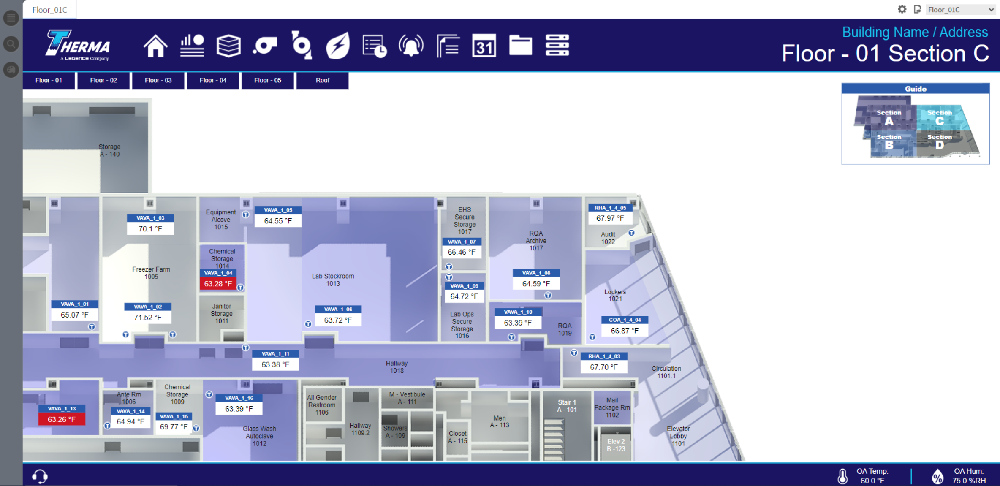
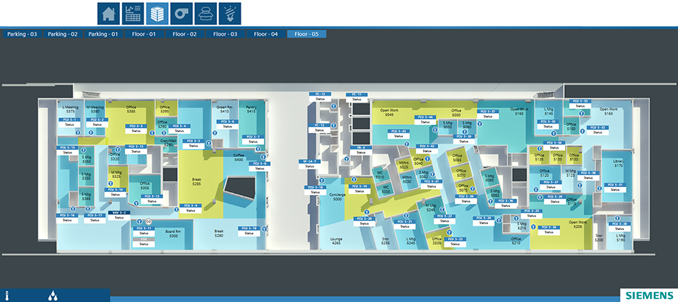
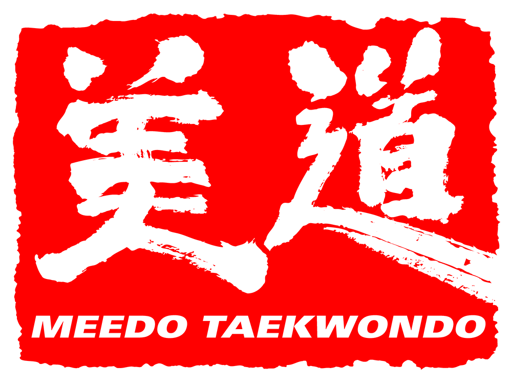
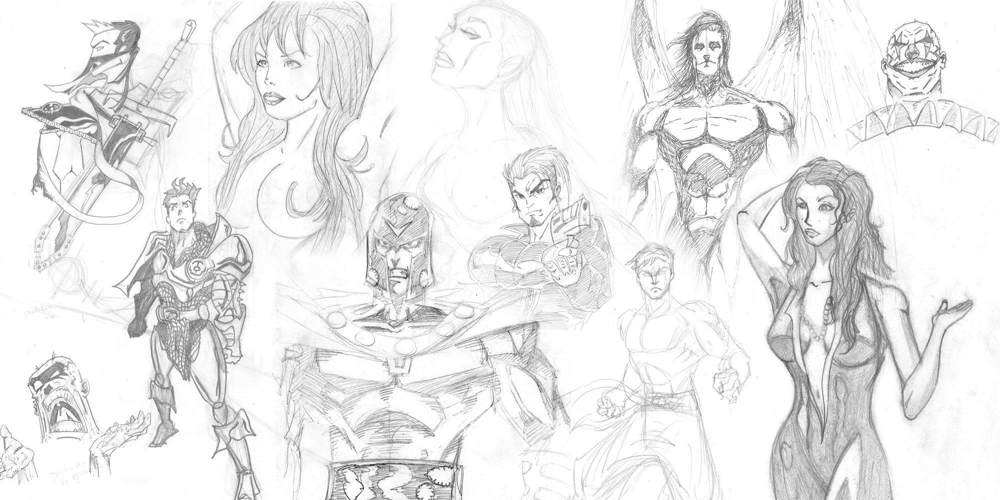
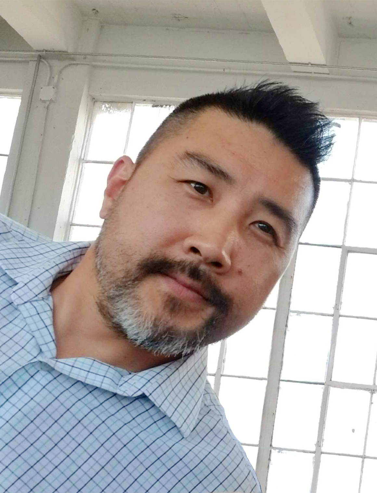

2024 — PRESENT
Senior Graphic Designer
Siemens NOCLead BAS front-end design across client projects, collaborate with technical teams, and mentor designers on visual standards and workflows.
I’m Seok-Ho Han, a graphic designer specializing in BAS/BMS interfaces, with a background in branding, print, and broadcast graphics. I bring clarity and a consistent visual language to technical systems and creative communication.

Interface design, visual identity,
and graphic communication.

Bringing navigation, system information, and equipment graphics together in a reusable Niagara 4 interface framework.
View project ↗
Floor plans, equipment graphics, and system views connected through a consistent Desigo CC interface.
View project ↗
From a brush-style mark to storefront signage and coordinated promotional graphics.
View project ↗
On-air graphic layouts and promotional print design from my work at NBC / Universal / Telemundo.
View project ↗Logo, label, and advertising design for ZEN Ultra Premium Hemp Oil.
View project ↗
Character sketches, observational drawing, and color-pencil studies exploring form, texture, and expression.
Explore sketchbook ↗My background spans broadcast graphics, brand design, and building automation. Today, my focus is on clear, consistent operational interfaces.
Lead BAS front-end design across client projects, collaborate with technical teams, and mentor designers on visual standards and workflows.
Developed Niagara 4 interfaces and a consistent platform-wide visual design system, supported by reusable templates and collaborative design practices.
Desigo CC · Niagara 4
HVAC & building-system graphics
Operator navigation and information hierarchy
Branding · Print · Broadcast graphics
Photoshop · Illustrator
Revit · AutoCAD · Spatial visualization
Reusable visual standards
Cross-functional collaboration
Mentorship and workflow consistency

With a formal background in graphic design, I approach BAS interfaces through both visual clarity and technical understanding. My work connects engineering requirements with screens that are easier to interpret and maintain.
Based in Corona, California.
05 / Resume
Explore my experience in graphic design, visual communication, and BAS interfaces.
View PDF in browser ↗ · 2026 resume
For graphic design, branding, and BAS/BMS interface opportunities.